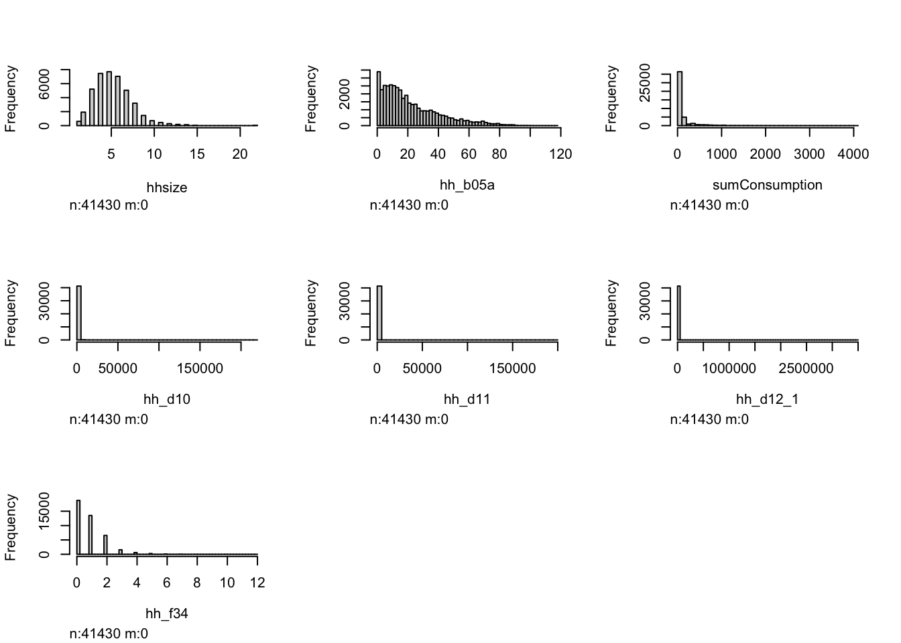
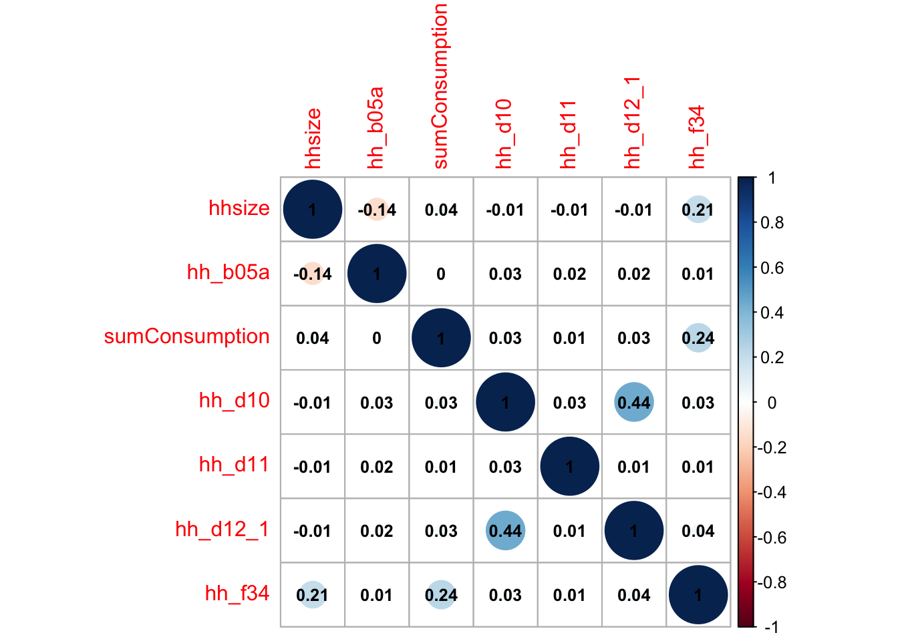
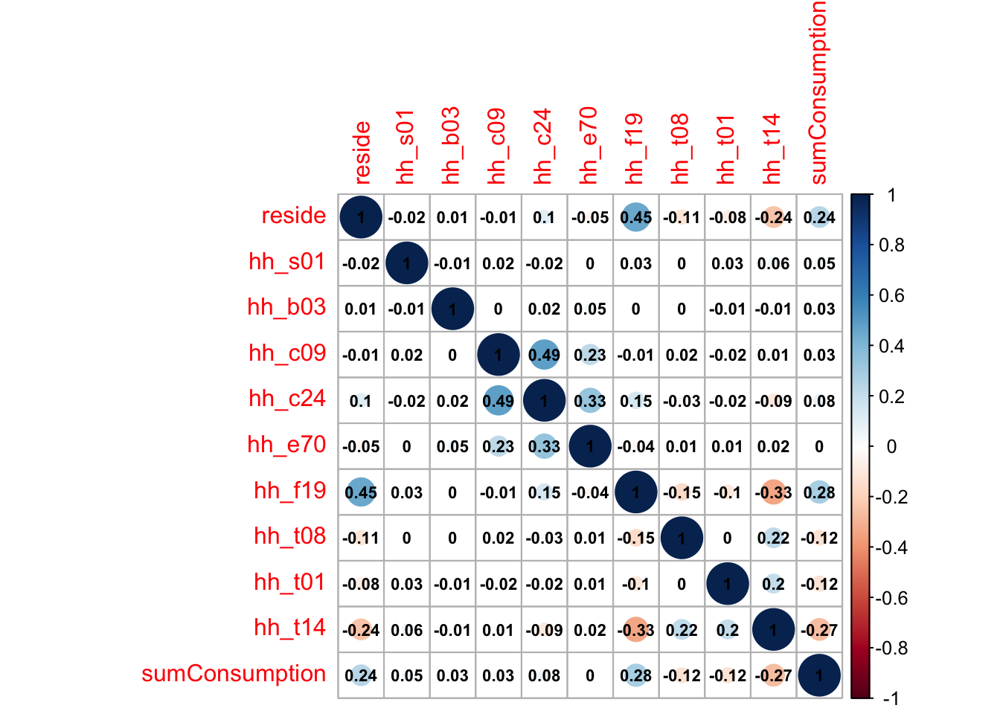

Introducing the Prediction Policy Framework
In the video-lecture below you’ll be given a brief introduction to the prediction policy framework, and a primer on machine learning. Please take a moment to watch the 10 minute video.
After watching the video, we have a practical excercise in R:
Predicting social assistance beneficiaries
Social policies usually work with tight budgets and limited fiscal space. To allocate resources efficiently, benefits need to be targeted to those who need them the most. Yet, identifying needs isn’t easy and misclassifications can have severe and irreversible impacts on people in need. Different targeting mechanisms are being used, including expert judgment to define eligibility criteria or selection by community committees. The most common approach for anti-poverty programs is based on data: Proxy Means Testing (PMT). A recent review and discussion of social assistance targeting by the World Bank can be found here.
The underlying idea behind PMT is to use data on easily observable household characteristics - which are hard to manipulate - to predict poverty. Traditionally, regressions of observable characteristics on reported consumption are performed on existing large-scale survey data sets. The regression coefficients of the best-performing model are then used as a weight. To define program eligibility, a second survey is conducted with potential beneficiaries. To screen households, information on the selected PMT variables is collected (e.g. number of rooms, type of house, household size) and the values of the chosen observables are multiplied by the observables’ respective weight (derived from the previous regression). Households are then ordered according to their predicted PMT score and benefits are allocated to households below a certain threshold. In block 1 of this course, we use data to build a PMT algorithm. We rely on World Bank’s LSMS household survey data from Malawi to build a model to rank and identify households in need. Before jumping to the data, we need to ensure that we have a proper understanding of the problem we want to solve.
Discussion Points
Many organisations, institutions, and firms around the world collect and, if we’re lucky, share data. One such example is The World Bank Group who, in cooperation with local statistical offices, collects cross-sectional and panel data on the socioeconomic lives of country nationals. The Living Standards Measurement Survey (LSMS, for short) has been around since the 1980’s, and it is publicly shared in various formats and distinct files. We’ve chosen to download the 2019-2020 LSMS data for Malawi, a cross-sectional database which contains several modules on Health, Education, Food Security, etc. When you download the data, you receive a folder with several .csv files that must be put together. The code below does just that.
1. Preliminaries: setting working directory and opening libraries
# 1.1 Cleaning the working environment and setting up the working directory path
rm(list = ls())
setwd("~/Desktop/Malawi2019")
# 1.2 Opening libraries
#install.packages("tidyverse","data.table")
library(tidyverse)
library(data.table)2. Uploading the data
We will be working with the Malawi dataset from the LSMS surveys from the World Bank Group. To download and merge the data, you can refer to the documentation: World Bank Microdata: LSMS Malawi.
# The following like will look inside the folder defined by file.path() command and collect the names of all the files that contain the word patterns "hh_mod".
filedir <- file.path("~/Desktop/Malawi2019")
filenames <- list.files(filedir,pattern="hh_mod", full.names=TRUE, recursive=FALSE, ignore.case=TRUE)
# data object now contains all files from the 2019 round from the Household Module
print(filenames)## [1] "/Users/michellegonzalez/Desktop/Malawi2019/hh_mod_a_filt.csv"
## [2] "/Users/michellegonzalez/Desktop/Malawi2019/HH_MOD_B.csv"
## [3] "/Users/michellegonzalez/Desktop/Malawi2019/HH_MOD_C.csv"
## [4] "/Users/michellegonzalez/Desktop/Malawi2019/HH_MOD_D.csv"
## [5] "/Users/michellegonzalez/Desktop/Malawi2019/HH_MOD_E.csv"
## [6] "/Users/michellegonzalez/Desktop/Malawi2019/HH_MOD_F.csv"
## [7] "/Users/michellegonzalez/Desktop/Malawi2019/HH_MOD_F1.csv"
## [8] "/Users/michellegonzalez/Desktop/Malawi2019/HH_MOD_G1.csv"
## [9] "/Users/michellegonzalez/Desktop/Malawi2019/HH_MOD_G2.csv"
## [10] "/Users/michellegonzalez/Desktop/Malawi2019/HH_MOD_G3.csv"
## [11] "/Users/michellegonzalez/Desktop/Malawi2019/HH_MOD_H.csv"
## [12] "/Users/michellegonzalez/Desktop/Malawi2019/HH_MOD_I1.csv"
## [13] "/Users/michellegonzalez/Desktop/Malawi2019/HH_MOD_I2.csv"
## [14] "/Users/michellegonzalez/Desktop/Malawi2019/HH_MOD_J.csv"
## [15] "/Users/michellegonzalez/Desktop/Malawi2019/HH_MOD_K1.csv"
## [16] "/Users/michellegonzalez/Desktop/Malawi2019/HH_MOD_K2.csv"
## [17] "/Users/michellegonzalez/Desktop/Malawi2019/HH_MOD_L.csv"
## [18] "/Users/michellegonzalez/Desktop/Malawi2019/HH_MOD_M.csv"
## [19] "/Users/michellegonzalez/Desktop/Malawi2019/HH_MOD_META.csv"
## [20] "/Users/michellegonzalez/Desktop/Malawi2019/HH_MOD_N1.csv"
## [21] "/Users/michellegonzalez/Desktop/Malawi2019/HH_MOD_N2.csv"
## [22] "/Users/michellegonzalez/Desktop/Malawi2019/HH_MOD_O.csv"
## [23] "/Users/michellegonzalez/Desktop/Malawi2019/HH_MOD_P.csv"
## [24] "/Users/michellegonzalez/Desktop/Malawi2019/HH_MOD_Q.csv"
## [25] "/Users/michellegonzalez/Desktop/Malawi2019/HH_MOD_R.csv"
## [26] "/Users/michellegonzalez/Desktop/Malawi2019/HH_MOD_S1.csv"
## [27] "/Users/michellegonzalez/Desktop/Malawi2019/HH_MOD_S2.csv"
## [28] "/Users/michellegonzalez/Desktop/Malawi2019/HH_MOD_T.csv"
## [29] "/Users/michellegonzalez/Desktop/Malawi2019/HH_MOD_U.csv"
## [30] "/Users/michellegonzalez/Desktop/Malawi2019/HH_MOD_V.csv"
## [31] "/Users/michellegonzalez/Desktop/Malawi2019/HH_MOD_W.csv"
## [32] "/Users/michellegonzalez/Desktop/Malawi2019/HH_MOD_X.csv"# We will now create function that will read all the files referenced in the filenames object and assign an an object to them (each file will become an element within a list).
datList <- lapply(filenames, function(i) {
df <- read.csv(i, header=TRUE, strip.white=TRUE)
return(df)
}) # this function should read all the *listed* files from above, convert them into a data frame and store them in a list
head(datList[[1]]) # returns the first elements in the first dataframe from the list datList## case_id HHID ea_id region district reside
## 1 1.01011e+11 7d78f2c5da59436d9bde9b09ea8a8aaf 10101100 North Chitipa RURAL
## 2 1.01011e+11 7144cc6d29b3485d9e6d6188b255c756 10101100 North Chitipa RURAL
## 3 1.01011e+11 9936d103bf974a93afbc63d477b8b3f2 10101100 North Chitipa RURAL
## 4 1.01011e+11 cc8f211413cd493e83e01a96aba95bbb 10101100 North Chitipa RURAL
## 5 1.01011e+11 e50cfa8d11b44d56891e0fad015b07c7 10101100 North Chitipa RURAL
## 6 1.01011e+11 4c60971913ca49b4beb6def01a0b133f 10101100 North Chitipa RURAL
## interviewDate hh_wgt hh_a02a hh_a03 hh_a06 hh_a11 hh_a13 hh_a22 hh_a23
## 1 2019-08-29 93.7194 10101 100 14 NO 14 58
## 2 2019-08-29 93.7194 10101 100 23 NO 14 64
## 3 2019-08-28 93.7194 10101 100 40 NO 14 30
## 4 2019-08-29 93.7194 10101 100 71 NO 14 30
## 5 2019-08-28 93.7194 10101 100 95 NO 14 58
## 6 2019-08-29 93.7194 10101 100 115 NO 14 70
## hh_g09 hh_m00 hh_o0a hh_s01 hh_w01 hhsize
## 1 NO Yes YES YES NO 4
## 2 YES Yes YES YES NO 4
## 3 NO Yes NO NO NO 4
## 4 NO Yes YES YES NO 5
## 5 NO Yes NO YES NO 5
## 6 YES Yes YES NO NO 2# A smart thing to do is to clean your Global Environment every so often when you are done with an object, to free up some memory
rm(filenames, filedir)Note that the order of the datasets within datList follows the order of the names in filenames, such that dataset hh_mod_a_filt.csv would be 1, HH_MOD_B.csv would be 2, and so forth.
3. Merging data
Now that we have succesfully uploaded all the files from our folder, we want to merge the datasets stored in the list (datList):
datAB <- merge(datList[[1]], datList[[2]], by="case_id", all = TRUE)Let’s do some sanity checks to see whether our merging worked as intended:
# number of rows and columns of module A
dim(datList[[1]]) # 11434 rows, 21 columns## [1] 11434 21# number of rows and columns of module B
dim(datList[[2]]) # 50476 rows, 53 columns## [1] 50476 53# number of rows and columns of our merged data. Rows MUST be the same as module B
dim(datAB) # 50476 rows # 73 columns## [1] 50476 73# notice that the number of columns = Cols A + Cols B -1[variable we used to merge]
#Brief overview of our new dataset/dataframe!
str(datAB)## 'data.frame': 50476 obs. of 73 variables:
## $ case_id : num 1.01e+11 1.01e+11 1.01e+11 1.01e+11 1.01e+11 ...
## $ HHID.x : Factor w/ 11434 levels "0004806a172546e99ae07674de291ed7",..: 5624 5624 5624 5624 5088 5088 5088 5088 6852 6852 ...
## $ ea_id : int 10101100 10101100 10101100 10101100 10101100 10101100 10101100 10101100 10101100 10101100 ...
## $ region : Factor w/ 3 levels "Central","North",..: 2 2 2 2 2 2 2 2 2 2 ...
## $ district : Factor w/ 32 levels "Balaka","Blantyre",..: 6 6 6 6 6 6 6 6 6 6 ...
## $ reside : Factor w/ 2 levels "RURAL","URBAN": 1 1 1 1 1 1 1 1 1 1 ...
## $ interviewDate: Factor w/ 346 levels "2019-04-22","2019-04-23",..: 129 129 129 129 129 129 129 129 128 128 ...
## $ hh_wgt : num 93.7 93.7 93.7 93.7 93.7 ...
## $ hh_a02a : int 10101 10101 10101 10101 10101 10101 10101 10101 10101 10101 ...
## $ hh_a03 : int 100 100 100 100 100 100 100 100 100 100 ...
## $ hh_a06 : int 14 14 14 14 23 23 23 23 40 40 ...
## $ hh_a11 : Factor w/ 3 levels "","NO","YES": 2 2 2 2 2 2 2 2 2 2 ...
## $ hh_a13 : Factor w/ 8 levels "","Dwelling destroyed",..: 1 1 1 1 1 1 1 1 1 1 ...
## $ hh_a22 : int 14 14 14 14 14 14 14 14 14 14 ...
## $ hh_a23 : int 58 58 58 58 64 64 64 64 30 30 ...
## $ hh_g09 : Factor w/ 3 levels "","NO","YES": 2 2 2 2 3 3 3 3 2 2 ...
## $ hh_m00 : Factor w/ 2 levels "No","Yes": 2 2 2 2 2 2 2 2 2 2 ...
## $ hh_o0a : Factor w/ 2 levels "NO","YES": 2 2 2 2 2 2 2 2 1 1 ...
## $ hh_s01 : Factor w/ 2 levels "NO","YES": 2 2 2 2 2 2 2 2 1 1 ...
## $ hh_w01 : Factor w/ 2 levels "NO","YES": 1 1 1 1 1 1 1 1 1 1 ...
## $ hhsize : int 4 4 4 4 4 4 4 4 4 4 ...
## $ HHID.y : Factor w/ 11434 levels "0004806a172546e99ae07674de291ed7",..: 5624 5624 5624 5624 5088 5088 5088 5088 6852 6852 ...
## $ PID : int 1 2 3 4 1 2 3 4 1 2 ...
## $ hh_b03 : Factor w/ 2 levels "FEMALE","MALE": 2 1 2 2 1 2 2 2 1 2 ...
## $ hh_b04 : Factor w/ 16 levels "BROTHER/SISTER-IN-LAW",..: 7 16 2 2 7 2 2 2 7 2 ...
## $ hh_b04a : Factor w/ 3 levels "","NO","YES": 2 3 2 1 2 2 2 2 3 1 ...
## $ hh_b05_2 : Factor w/ 3 levels "","NO","YES": 1 1 2 3 1 1 1 1 1 3 ...
## $ hh_b05_2_1 : Factor w/ 3 levels "","NO","YES": 1 1 1 3 1 1 1 1 1 3 ...
## $ hh_b05a : int 41 34 11 4 55 18 13 13 25 8 ...
## $ hh_b05b : int NA NA NA 8 NA NA NA NA NA NA ...
## $ hh_b06a : Factor w/ 12 levels "APRIL","AUGUST",..: 11 5 10 3 6 2 11 11 3 6 ...
## $ hh_b06b : int 1977 1985 2007 2014 1964 2001 2005 2005 1993 2011 ...
## $ hh_b07 : int 0 0 0 0 0 0 0 0 0 0 ...
## $ hh_b08 : int 7 7 0 7 7 7 7 7 7 7 ...
## $ hh_b09 : Factor w/ 7 levels "OTHER TOWN OR URBAN CENTER IN THIS DISTRICT",..: 5 2 5 5 5 5 5 5 5 5 ...
## $ hh_b10a : Factor w/ 33 levels "","Balaka","Blantyre City",..: 1 1 1 1 1 1 1 1 1 1 ...
## $ hh_b10b : Factor w/ 9 levels "","Botswana",..: 1 1 1 1 1 1 1 1 1 1 ...
## $ hh_b10_oth : Factor w/ 11 levels "","BURUNDI","CONGO",..: 1 1 1 1 1 1 1 1 1 1 ...
## $ hh_b11 : Factor w/ 3 levels "","NO","YES": 3 3 3 3 3 3 3 3 3 3 ...
## $ hh_b12 : int NA NA NA NA NA NA NA NA NA NA ...
## $ hh_b13 : Factor w/ 14 levels "","DIVORCE","FAMILY QUARREL",..: 1 1 1 1 1 1 1 1 1 1 ...
## $ hh_b13_oth : Factor w/ 56 levels "","BUILT OWN HOUSE",..: 1 1 1 1 1 1 1 1 1 1 ...
## $ hh_b14 : Factor w/ 6 levels "","OTHER TOWN OR URBAN CENTER IN THIS DISTRICT",..: 1 1 1 1 1 1 1 1 1 1 ...
## $ hh_b15a : Factor w/ 33 levels "","Balaka","Blantyre City",..: 1 1 1 1 1 1 1 1 1 1 ...
## $ hh_b15b : Factor w/ 8 levels "","Mozambique",..: 1 1 1 1 1 1 1 1 1 1 ...
## $ hh_b15b_oth : Factor w/ 5 levels "","BULUNDI","BURUNDI",..: 1 1 1 1 1 1 1 1 1 1 ...
## $ hh_b16a : Factor w/ 4 levels "DEAD","DOES NOT KNOW",..: 1 1 4 4 3 1 1 1 3 3 ...
## $ hh_b16b : int NA NA 1 1 NA NA NA NA NA NA ...
## $ hh_b17 : int 34 18 NA NA NA 7 3 3 NA NA ...
## $ hh_b18 : Factor w/ 10 levels "A-LEVEL","DEGREE",..: 8 7 8 8 8 10 10 10 8 8 ...
## $ hh_b19a : Factor w/ 4 levels "DEAD","DOES NOT KNOW",..: 3 1 4 4 3 4 4 4 3 4 ...
## $ hh_b19b : int NA NA 2 2 NA 1 1 1 NA 1 ...
## $ hh_b20 : int NA 17 NA NA NA NA NA NA NA NA ...
## $ hh_b21 : Factor w/ 10 levels "A-LEVEL","DEGREE",..: 8 8 8 8 8 8 8 8 8 10 ...
## $ hh_b22 : Factor w/ 16 levels "","CHEWA","ENGLISH",..: 13 1 1 1 4 1 1 1 4 1 ...
## $ hh_b22_oth : Factor w/ 40 levels "","AMANG'ANJA",..: 1 1 1 1 1 1 1 1 1 1 ...
## $ hh_b23 : Factor w/ 6 levels "","CHRISTIANITY",..: 2 2 1 1 2 2 2 2 2 1 ...
## $ hh_b23_oth : Factor w/ 60 levels "","ABRAHAM AFRICAN CHURCH",..: 1 1 1 1 1 1 1 1 1 1 ...
## $ hh_b24 : Factor w/ 7 levels "","DIVORCED",..: 5 3 1 1 7 4 4 4 6 1 ...
## $ hh_b24_1 : Factor w/ 4 levels "","MATRILINEAL",..: 4 4 1 1 1 1 1 1 1 1 ...
## $ hh_b24_1_oth : Factor w/ 31 levels "","BOTH","BOTH MOVED TO A DIFFERENT VILLAGE",..: 1 1 1 1 1 1 1 1 1 1 ...
## $ hh_b24_2 : Factor w/ 4 levels "","MOVE TO DIFFERENT VILLAGE",..: 3 3 1 1 1 1 1 1 1 1 ...
## $ hh_b25 : Factor w/ 3 levels "","NO","YES": 3 3 1 1 1 1 1 1 1 1 ...
## $ hh_b26a : int 2 1 NA NA NA NA NA NA NA NA ...
## $ hh_b26a_1 : int 2006 2006 NA NA NA NA NA NA NA NA ...
## $ hh_b26b : int NA NA NA NA NA NA NA NA NA NA ...
## $ hh_b26b_1 : int NA NA NA NA NA NA NA NA NA NA ...
## $ hh_b26b_2 : Factor w/ 3 levels "","NO","YES": 2 1 1 1 1 1 1 1 1 1 ...
## $ hh_b26c : int NA NA NA NA NA NA NA NA NA NA ...
## $ hh_b26c_1 : int NA NA NA NA NA NA NA NA NA NA ...
## $ hh_b26c_2 : Factor w/ 3 levels "","NO","YES": 1 1 1 1 1 1 1 1 1 1 ...
## $ hh_b27 : Factor w/ 3 levels "","NO","YES": 3 1 1 1 1 1 1 1 1 1 ...
## $ hh_b28 : int 1 NA NA NA NA NA NA NA NA NA ...Something that you might find interesting is that the numeric variable case_id (which we used to merge) looks odd. This is due to the fact that R is reading this number in scientific form, if you’d like to see the standard number:
options(scipen = 100) # run this line to turn off scientific form, to set it back use options(scipen = 0)Now you can run the str(datAB) line again and see the case_id variable in standard form. Let’s further merge dataframe datAB with module C, which contains individual level data on Education. The individual unique identifier, which exists in Module B, and C (and now also in datAB after the merge) is PID:
datABC <- merge(datAB, datList[[3]], by=c("case_id","PID"), all = TRUE)We use the household unique identifier, case_id, to match households and the individual unique identifier, PID, to match individuals within each household. The dataframe should increase in column number, but not in number of observations (feel free to check using dim() or in the global environment).# We should select other relevant modules from the IHS5 Household Database: D[Health; case_id PID], E[Time Use & Labour; case_id PID], F[Housing, case_id], H[Food Security, case_id], T[Subjective Assessment of Well-Being, case_id]:
datABCD <- merge(datABC, datList[[4]], by=c("case_id","PID"), all = TRUE)## Warning in merge.data.frame(datABC, datList[[4]], by = c("case_id", "PID"), :
## column names 'HHID.x', 'HHID.y' are duplicated in the resultdatABCDE <- merge(datABCD, datList[[5]], by=c("case_id","PID"), all = TRUE)## Warning in merge.data.frame(datABCD, datList[[5]], by = c("case_id", "PID"), :
## column names 'HHID.x', 'HHID.y' are duplicated in the resultThere’s a warning! It isn’t a big deal (the code still did it’s job), but let’s try to sort it out anyway. Dataframe datABCD contains already variables HHID.x and HHID.y. Dataframe datABCDE now contains HHID, HHID.x and HHID.y, so perhaps it would be prudent to delete two of the three duplicates:
# let's find out the position of these two columns in the dataframe
which( colnames(datABCDE)=="HHID.x") # 3 and 74## [1] 3 74which( colnames(datABCDE)=="HHID.y") # 23 and 129## [1] 23 129which( colnames(datABCDE)=="HHID") # 187 (let's keep this guy)## [1] 187datABCDE <- datABCDE[,-c(3,23,74,129)] # this line removes the four selected duplicated columns.Note that as we continue to merge multiple modules these duplicated
columns will reappear. This happens when two datasets containing the
same vector name
#Merging Module F (Housing)
datABCDEF <- merge(datABCDE, datList[[6]], by="case_id", all = TRUE)Up until this point, the order of datList dataframes and Modules was the same (1-A,2-B,3-C, etc.). Now, we need to take into account that there exist modules F1, G1, G2 etc.You can refer to Table 10: Structure of the IHS5 Household Database of the Basic Information Document to confirm the correct order.
datABCDEFH <- merge(datABCDEF, datList[[11]], by="case_id", all = TRUE)
datABCDEFHT <- merge(datABCDEFH, datList[[28]], by="case_id", all = TRUE)## Warning in merge.data.frame(datABCDEFH, datList[[28]], by = "case_id", all =
## TRUE): column names 'HHID.x', 'HHID.y' are duplicated in the resultwhich( colnames(datABCDEFHT)=="HHID.x") # 183 454## [1] 183 454which( colnames(datABCDEFHT)=="HHID.y") # 340 494## [1] 340 494datABCDEFHT <- datABCDEFHT[,-c(454,340,494)]
names(datABCDEFHT)[names(datABCDEFHT) == "HHID.x"] <- "HHID" # change the name of the non-eliminated HHID.x column to HHIDWe should also include some information on consumption:
# G1[Food Consumption Over Past One Week; case_id hh_g02] 8
# This module collects information on all food consumed by the household in the past 7 days
datG1 = datList[[8]]
datG1 <- datG1[,c(1,7,8)] # I only want to keep the unique household identifier, item code, and the total amount consumed in the past week.
# We want to create a vector (variable) that contains one single number: the total amount spent on food in the past 7 days.
# Initialise empty vectors for 'for' loop
list <- unique(datG1$case_id) # list is an object containing only
idx <- NA
hold <- NA
sumConsumption <- NA
temp <- NA
data <- NA
for (i in 1:length(list)) { # iterate over the number of elements in object 'list'
idx <- which(datG1$case_id == list[i]) #index containing the unique id that matches the iteration number
hold <- datG1[idx,] # vector containing all the elements that match the previous indicator
sumConsumption <- sum(hold$hh_g03a, na.rm = TRUE) # sum all the values contained in food item consumption (hh_g03a) vector (in $)
temp <- cbind(hold$case_id,sumConsumption) # create a temporary object with the two concatenated vectors: the unique identifier and the final consumption variable
data <- rbind(data,temp) # append the temporary object to dataframe data
}
# Make sure that the object data is stored correctly: dataframe type
datG <- as.data.frame(data)
# let's keep only one observation per household
datG <- unique(datG)
# Now let's rename the variable and merge our consumption data!
names(datG)[names(datG) == "V1"] <- "case_id"
# The first row is empty, let's get rid of it
datG <- datG[-1,]
datABCDEFHTG1 <- merge(datABCDEFHT, datG, by="case_id", all = TRUE)
# save/export the final, merged dataset
write_rds(datABCDEFHTG1, "Malawi_2019(2).rds","xz", compression = 9L)You can download the final data set by clicking on the button below.
This code is a step by step on how to go about writing a predictive model using a linear regression. Despite its simplicity and transparency, i.e. the ease with which we can interpret its results, a linear model is not without challenges in machine learning. Using the Malawi 2019-2020 LSMS data, we will predict a known outcome, Food Consumption, by training our model using correlates (i.e. features) that would explain the phenomenon; i.e. we will build a PMT algorithm.
1. Preliminaries: working directory, libraries, data upload
rm(list = ls())
setwd("~/Desktop/MachineLearning4PP/Machine-Learning-for-Public-Policy")
# Libraries
# install.packages("caret", "corrplot", "Hmisc", "plyr")
library(plyr)
library(tidyverse)
library(data.table)
library(caret)
library(corrplot)
library(Hmisc)
library(stargazer)
malawi <- read_rds("Malawi_2019.rds")2. Data Pre-Processing: data visualisation and data wrangling
The Malawi dataset contains 50,476 observations and 514 features (variables). It is a very large dataframe, and we want to work with only a subset of it using all the observations but only some features; i.e. we’re going to create a subset of the dataframe that contains only the relevant features for our PMT.You can find the data label descriptions here.
dim(malawi)## [1] 50476 514We should begin the critical process of feature selection (or variable selection). Some notes on this: from a practical point of view, a model with less predictors may be easier to interpret. Also, some models may be negatively affected by non-informative predictors. This process is similar to traditional econometric modeling, but we should not conflate predictive and explanatory modeling. Importantly, please note that we are not interested in knowing why something happens, but rather in what is likely to happen given some known data. Hence:
Target variable (a.k.a. Dependent Variable): Total Food Consumption $ in the Past 7 Days
Which variables would help us predict Malawian households’ weekly food-spending?
# By looking at the data dictionary, I've selected the following variables:
#1 $ food consumption in the past week: sumConsumption
which( colnames(malawi)=="sumConsumption") # 514
#2 How old is NAME (year): hh_b05a
which( colnames(malawi)=="hh_b05a") # 27
#3 reside: reside
which( colnames(malawi)=="reside") # 6
#4 household size: hhsize
which( colnames(malawi)=="hhsize") #21
#5 did you or anyone else in this HH borrow on credit?: hh_s01
which( colnames(malawi)=="hh_s01") # 19
#6 gender [1 MALE, 2 FEMALE]: hh_b03
which( colnames(malawi)=="hh_b03") # 22
#7 What is the highest educational qualification [NAME] has acquired: hh_c09
which( colnames(malawi)=="hh_c09") # 88
#8 $ Tuition, including any extra tuition fees (hh_c22a)
which( colnames(malawi)=="hh_c22a") # 105
#9 $ Expenditures on after school programs & tutoring (hh_c22b)
which( colnames(malawi)=="hh_c22b") # 106
#10 $ School books and other materials (hh_c22c)
which( colnames(malawi)=="hh_c22c") # 107
#11 $ School uniform clothing (hh_c22d)
which( colnames(malawi)=="hh_c22d") #108
#12 $ TOTAL (hh_c22j)
which( colnames(malawi)=="hh_c22j") #114
#13 How much was spent in TOTAL in the last 12 months? (hh_c22l)
which( colnames(malawi)=="hh_c22l") #116
#14 Have you used a computer? (hh_c24)
which( colnames(malawi)=="hh_c24") # 124
#15 Amt [NAME] spent in the past 4 weeks for all illnesses and injuries? (hh_d10)
which( colnames(malawi)=="hh_d10") # 142
#16 Amt in total did [NAME]spent...for medical care not related to an illness? (hh_d11)
which( colnames(malawi)=="hh_d11") #143
#17 How much in total did [NAME] spend..for medical insurance? (hh_d12_1)
which( colnames(malawi)=="hh_d12_1") #145
#18 Does [NAME] want to change his/her current employment situation? (hh_e70)
which( colnames(malawi)=="hh_e70") #337
#19 What was the total amout paid in the form of land rent during the p... (hh_f04_4)
which( colnames(malawi)=="hh_f04_4") #355
#20 hh_f04a How much do you pay to rent this property?
which( colnames(malawi)=="hh_f04a") #358
#21 Do you have electricity working in your dwelling? (hh_f19)
which( colnames(malawi)=="hh_f19") #381
#22 How many working cell phones in total does your household own? (hh_f34)
which( colnames(malawi)=="hh_f34") #404
#23 Which of the following is true? Your current income . . . (hh_t08)
which( colnames(malawi)=="hh_t08") #499
#24 Concerning your HH's food consumption, over the past months which is true (hh_t01)
which( colnames(malawi)=="hh_t01") #492
#25 HH were unable to eat healthy & nutritious food b'se of a lack of money/other (hh_t14)
which( colnames(malawi)=="hh_t14") #507
#26 ... What other features do you consider important?
# subsetting our dataframe
cols <- c(6,21,27,514,19,22,88,105,106,107,108,114,116,124,142,143,145,337,355,358,381,404,499,492,507)
malawi <- malawi[,cols]
# The malawi dataframe should only have 25 (selected) features now
# Also know that you can subset with the column name instead of the number of the column. In this excercise we use the number as a way to introduce the which() function, which may come in handy in the future. Missing values
In traditional econometric models, we often discuss what we can do in the presence of missing data. First and foremost, we should assess whether there is a pattern to missingness and if so, what that means to what we can learn from our (sub)population. This remains true for machine learning. A practical difference is that while one can implement a causal econometric model with missing values, many machine learning models fail if there are any in the training or control data.
# Missing values (NAs) by feature
colSums(is.na(malawi))## reside hhsize hh_b05a sumConsumption hh_s01
## 0 0 0 9046 0
## hh_b03 hh_c09 hh_c22a hh_c22b hh_c22c
## 0 0 32402 32398 32408
## hh_c22d hh_c22j hh_c22l hh_c24 hh_d10
## 32402 32397 32542 0 0
## hh_d11 hh_d12_1 hh_e70 hh_f04_4 hh_f04a
## 0 0 0 50121 44487
## hh_f19 hh_f34 hh_t08 hh_t01 hh_t14
## 0 0 0 0 0Interestingly, a lot of the features from module C have more than half the values missing (>30,000 hhs). All of the variables refer to $ spent on education. For the sake of simplicity, I will simply remove those features. But this action may later affect our predictive model, if such features were to increase its predictive performance. Another alternative would be to only work with the remaining households for which we have full data. However, that would reduce our sample size significantly and I would discourage it. Finally, multiple imputation is not feasible due to the large share of missingness in the data.
#hh_c22a-l
which( colnames(malawi)=="hh_c22a") # 8## [1] 8which( colnames(malawi)=="hh_c22b") # 9## [1] 9which( colnames(malawi)=="hh_c22c") # 10## [1] 10which( colnames(malawi)=="hh_c22d") #11## [1] 11which( colnames(malawi)=="hh_c22j") #12## [1] 12which( colnames(malawi)=="hh_c22l") #13## [1] 13cols_cModule <- c(8,9,10,11,12,13)
malawi <- malawi[,-cols_cModule]
# we have 19 features left in the malawi dataframe
# Are there any remaining missing values? double-checking is always a good idea!
colSums(is.na(malawi))## reside hhsize hh_b05a sumConsumption hh_s01
## 0 0 0 9046 0
## hh_b03 hh_c09 hh_c24 hh_d10 hh_d11
## 0 0 0 0 0
## hh_d12_1 hh_e70 hh_f04_4 hh_f04a hh_f19
## 0 0 50121 44487 0
## hh_f34 hh_t08 hh_t01 hh_t14
## 0 0 0 0# There seem to be quite a lot of missing values in a couple of vectors from the F module
which( colnames(malawi)=="hh_f04_4") # 13## [1] 13which( colnames(malawi)=="hh_f04a") # 14## [1] 14malawi <- malawi[,-c(13,14)]
# The target feature, Food Consumption in the past 7 days [sumConsumption], has 9046 missing values. Let's get rid of them
rows_consumption <- which(is.na(malawi$sumConsumption))
head(rows_consumption)## [1] 41431 41432 41433 41434 41435 41436tail(rows_consumption)## [1] 50471 50472 50473 50474 50475 50476length(rows_consumption) # we've created an indicator with all the missing rows## [1] 9046malawi <- malawi[-rows_consumption,]
colSums(is.na(malawi)) # all clear!## reside hhsize hh_b05a sumConsumption hh_s01
## 0 0 0 0 0
## hh_b03 hh_c09 hh_c24 hh_d10 hh_d11
## 0 0 0 0 0
## hh_d12_1 hh_e70 hh_f19 hh_f34 hh_t08
## 0 0 0 0 0
## hh_t01 hh_t14
## 0 0Visualising our data
A quick and effective way to take a first glance at our data is to plot histograms of relevant (continuously distributed) features.
malawi_continuous <- malawi %>% select_if(~is.integer(.) | is.numeric(.)) # this line selects all variables in the dataframe which are integer OR numeric, and can therefore be plotted as a histogram.
hist.data.frame(malawi_continuous) # from the Hmisc package, quick and painless.
Some important information we can gather from these plots: our food consumption measure is skewed (perhaps it should be logged?), there are a number of variables for which there seems to be bunching at the zero value. The only (close to) normal distribution we observe is in terms of household size.
We should plot the remaining factor (binary, categorical) features.
malawi_factor <- malawi %>% select_if(~is.factor(.)) # subset of the dataframe containing only factor variables
llply(.data=malawi_factor, .fun=table) # create tables of all the variables in dataframe using the plyr package## $reside
##
## RURAL URBAN
## 35814 5616
##
## $hh_s01
##
## NO YES
## 28946 12484
##
## $hh_b03
##
## FEMALE MALE
## 21501 19929
##
## $hh_c09
##
## A-LEVEL DEGREE DIPLOMA JCE MASTERS MSCE/GCSE NONE
## 10012 115 104 263 1794 23 1677 24110
## PhD PSLC
## 4 3328
##
## $hh_c24
##
## No Yes
## 5655 34279 1496
##
## $hh_e70
##
## No Yes
## 22163 15720 3547
##
## $hh_f19
##
## NO YES
## 36824 4606
##
## $hh_t08
##
##
## 3
## ALLOWS YOU TO BUILD YOUR SAVINGS
## 2443
## ALLOWS YOU TO SAVE JUST A LITTLE
## 5762
## IS NOT SUFFICIENT, SO YOU NEED TO USE YOUR SAVINGS TO MEET EXPENSES
## 8147
## IS REALLY NOT SUFFICIENT, SO YOU NEED TO BORROW TO MEET EXPENSES
## 7760
## ONLY JUST MEETS YOUR EXPENSES
## 17315
##
## $hh_t01
##
##
## 3
## It was just adequate for household needs
## 13520
## It was less than adequate for household needs
## 25794
## It was more than adequate for household needs
## 2113
##
## $hh_t14
##
## DON'T KNOW NO YES
## 3 25 7949 33453Some of what we can gather from looking at the tables is that there are features for which the levels (also known as categories) are not labeled in a way that we can understand. For example, feature hh_c09 (What is the highest educational qualification [NAME] has acquired) has about 10,012 values under an unnamed educational qualification. Two things may be going on here: 1) the enumerators coded missing values differently from NA (which R automatically reads as missing), or 2) there is a value which was unlabeled and we may need to relabel.
levels(malawi$hh_c09)## [1] "" "A-LEVEL" "DEGREE" "DIPLOMA" "JCE" "MASTERS"
## [7] "MSCE/GCSE" "NONE" "PhD" "PSLC"# the line above tells us that there are empty cells, recognised by the level "".
head(malawi$hh_c09) # we can confirm that it is indeed an empty cell by looking at the first six values of the dataframe (using the head command, which returns the first six elements). One of the six elements is nothing. ## [1] NONE NONE NONE NONE NONE
## Levels: A-LEVEL DEGREE DIPLOMA JCE MASTERS MSCE/GCSE NONE PhD PSLCThe main take away from creating tables of all the factor variables in the dataframe is that there are still missing values that were not taken care of during the data cleaning step. This is due to the fact that, as R read the factors, it mistakenly read an empty cell as a category, and not a missing value.
Exploring relationships between features
Let’s explore the relationships that may or may not exist between our selected features using two distinct correlation matrices.
M <- cor(malawi_continuous) # create a correlation matrix of the continuous dataset, cor() uses Pearson's correlation coefficient as default. This means we can only take the correlation between continuous variables
corrplot(M, method="circle", addCoef.col ="black", number.cex = 0.8) # visualise it in a nice way
# Let's compute the Spearman correlation coefficient between categorical variables
malawi_factorC <- as.data.frame(lapply(malawi_factor,as.numeric)) # coerce dataframe to numeric, as the cor() command only takes in numeric types
M2 <- cor(malawi_factorC, method = "spearman")
corrplot(M2, method="circle", addCoef.col ="black", number.cex = 0.8) # visualise it in a nice way
Notice how, in both matrices, but particularly that which contains our target variable, we observe several instances were the correlation coefficient is zero. We call this, a zero-variance predictor. For many machine learning models (excluding tree-based models), this may cause the model to crash or the fit to be unstable.
3. Partition data into training and test datasets
When we are working with machine learning learning models, it is important to have two datasets. A training dataset from which our model will learn, and a test dataset containing the same features as our training dataset. To split our main dataset into two, we will work with an 80/20 split.
The 80/20 split has its origins in the Pareto Principle, which states that “in most cases, 80% of effects from from 20% of causes”. Without other relevant knowledge of the source or shape of the data, this partitioning method is a good place to start and indeed standard in the machine learning field.
# Always set a seet for reproducibility purposes!
set.seed(1234777) # use any number you want
# We could split the data manually, but the caret package includes an useful function
train_idx <- createDataPartition(malawi$sumConsumption, p = .8, list = FALSE, times = 1)
head(train_idx)## Resample1
## [1,] 2
## [2,] 3
## [3,] 4
## [4,] 5
## [5,] 6
## [6,] 8Train_df <- malawi[ train_idx,]
Test_df <- malawi[-train_idx,]4. Creating our first predictive model and evaluating its performance: RMSE and R^2
We will start by fitting a predictive model using the training dataset; that is, our target variable Total household food consumption in the past 7 days or sumConsumption will be a \(Y\) dependent variable in a linear model \(Y = \alpha + x'\beta + \epsilon\), and the remaining features in the dataframe correspond to the row vectors \(x'\beta\).
model1 <- lm(sumConsumption ~ .,Train_df) # the dot after the squiggle ~ asks the lm() function tu use all other variables in the dataframe as predictors to the dependent variable sumConsumption
stargazer(model1, type = "text")##
## =====================================================================================================
## Dependent variable:
## ---------------------------
## sumConsumption
## -----------------------------------------------------------------------------------------------------
## resideURBAN 13.259***
## (4.236)
##
## hhsize 1.683***
## (0.585)
##
## hh_b05a -0.157*
## (0.084)
##
## hh_s01YES 4.692*
## (2.778)
##
## hh_b03MALE 3.371
## (2.534)
##
## hh_c09A-LEVEL -35.335
## (24.360)
##
## hh_c09DEGREE -23.290
## (26.391)
##
## hh_c09DIPLOMA 40.064**
## (17.755)
##
## hh_c09JCE 23.005***
## (7.422)
##
## hh_c09MASTERS 4.132
## (56.879)
##
## hh_c09MSCE/GCSE 21.789***
## (8.056)
##
## hh_c09NONE 9.961**
## (4.370)
##
## hh_c09PhD -78.808
## (114.431)
##
## hh_c09PSLC 15.682**
## (6.117)
##
## hh_c24No -17.959***
## (5.749)
##
## hh_c24Yes 72.108***
## (9.900)
##
## hh_d10 0.002**
## (0.001)
##
## hh_d11 -0.001
## (0.001)
##
## hh_d12_1 0.0001
## (0.00005)
##
## hh_e70No 7.392**
## (3.099)
##
## hh_e70Yes 15.542***
## (4.994)
##
## hh_f19YES 68.338***
## (4.953)
##
## hh_f34 25.370***
## (1.473)
##
## hh_t08ALLOWS YOU TO BUILD YOUR SAVINGS 181.985
## (161.857)
##
## hh_t08ALLOWS YOU TO SAVE JUST A LITTLE 148.168
## (161.815)
##
## hh_t08IS NOT SUFFICIENT, SO YOU NEED TO USE YOUR SAVINGS TO MEET EXPENSES 117.798
## (161.814)
##
## hh_t08IS REALLY NOT SUFFICIENT, SO YOU NEED TO BORROW TO MEET EXPENSES 126.248
## (161.814)
##
## hh_t08ONLY JUST MEETS YOUR EXPENSES 127.308
## (161.796)
##
## hh_t01It was just adequate for household needs -64.656***
## (6.097)
##
## hh_t01It was less than adequate for household needs -75.411***
## (6.262)
##
## hh_t01It was more than adequate for household needs
##
##
## hh_t14DON'T KNOW 253.181***
## (53.908)
##
## hh_t14NO 40.079***
## (3.775)
##
## hh_t14YES
##
##
## Constant 15.806
## (161.744)
##
## -----------------------------------------------------------------------------------------------------
## Observations 33,146
## R2 0.101
## Adjusted R2 0.100
## Residual Std. Error 228.534 (df = 33113)
## F Statistic 116.660*** (df = 32; 33113)
## =====================================================================================================
## Note: *p<0.1; **p<0.05; ***p<0.01The output of our model, obtained with the summary() command, or stargazer(), has three important indicators to assess the performance of our model:
## Min. 1st Qu. Median Mean 3rd Qu. Max.
## -508.94 -76.74 -44.06 0.00 -12.11 3923.07The max(imum) error of \(3290.59\) suggests that the model under-predicted expenses by circa $3,300 for at least one observation. Fifty percent of the predictions (between the first and third quartiles) over-predict the true consumption value by $77 and $12.50. From these data, we obtain the popular measure of perfomance evaluation known as the Root Mean Squared Error (RMSE, for short).
# Calculate the RMSE for the training dataset, or the in-sample RMSE.
# 1. Predict values on the training dataset
p0 <- predict(model1, Train_df)
# 2. Obtain the errors (predicted values minus observed values of target variable)
error0 <- p0 - Train_df[["sumConsumption"]]
# 3. In-sample RMSE
RMSE_insample <- sqrt(mean(error0 ^ 2))
print(RMSE_insample)## [1] 228.4205The RMSE (\(227.528\)) gives us an absolute number that indicates how much our predicted values deviate from the true (observed) number. Think of the question, how far, on average, are the residuals away from zero? Generally speaking, the lower the value, the better the model fit. Besides being a good measure of goodness of fit, the RMSE is also useful for comparing the ability of our model to make predictions on different (e.g. test) datasets. The in-sample RMSE should be close or equal to the out-of-sample RMSE.
The p-values: represented by stars *** indicate the predictive power of each feature in the model. In the same line, the magnitude of the coefficient is also important, especially given that we are interested in explanatory power and not causality.
The R-squared: arguably the go-to indicator for performance assessment. The total variance explained by our model (R^2) is ~ 10 percent (0.09986). Low R^2 values are not uncommon, especially in the social sciences. However, when hoping to use a model for predictive purposes, 10 percent might not be enough, large number of statistically significant features notwithstanding. The drawback from relying solely on this measure is that it does not take into consideration the problem of model over-fitting; i.e. you can inflate the R-squared by adding as many variables as you want, even if those variables have little predicting power. This method will yield great results in the training data, but will underperform when extrapolating the model to the test (or indeed any other) data.
Out of sample model predictions
Now that we have built and evaluated our model, we can proceed to make out-of-sample predictions.
p <- predict(model1, Test_df)## Warning in predict.lm(model1, Test_df): prediction from a rank-deficient fit may
## be misleadingNotice that our prediction produces a warning. The warning is just that, a warning, and it does not stop the program from running or producing results. It does, however, indicate that those results may be meaningless. This is not big news for us at this point, since we have run into some interesting insights along the way: zero-variance predictors in the correlation matrix, a low R-squared value…
The bias-variance tradeoff in practice
We previously mentioned that the RMSE metric could also be used to compare between training and test model predictions. Let us estimate the ou-of-sample RMSE:
error <- p - Test_df[["sumConsumption"]] # predicted values minus actual values
RMSE_test <- sqrt(mean(error^2))
print(RMSE_test) # this is known as the out-of-sample RMSE## [1] 232.5525Notice that the in-sample RMSE[\(227.528\)] is very close to the out-of-sample RMSE[\(235.9987\)]. This means that our our model makes consistent predictions across different datasets. However, we also now by now that these predictions are not great. What we are observing here is a model that has not found a balance between bias and variance.
We can take a first glance at the realised household food consumption vs. the predicted food consumption stored in our object ‘p’ by selecting the first six elements of our dataset using the command head()
head(cbind(Test_df$sumConsumption,p))## p
## 1 71.05 139.47176
## 7 37.50 89.82853
## 23 51.50 45.20280
## 27 42.00 195.02980
## 31 74.50 131.10278
## 32 74.50 134.63020With the first six households, we’re pretty far off the mark. Another way to visualise this is to use a Confusion Matrix (2×2 table that shows the predicted values from the model vs. the actual values from the test dataset). Remember we are trying to build a model that can accurately predict a household’s food consumption needs. Assume that the government of Malawi has decided to give cash transfers to households who spend less than $95 a week. Let’s create binary variables for the realised outcome and the predicted outcome, which take on the value 1 if the household spends below $95 a week and 0 otherwise. We can then use those binary variables to build a confusion matrix.
Test_df$realised_consumption <- ifelse(Test_df$sumConsumption<95,1,0)
# How many households spend less than $95 a week on food?
table(Test_df$realised_consumption)##
## 0 1
## 2170 6114# Answer: 6114!
Test_df$predicted_consumption <- ifelse(p<95,1,0)
# How many households do we predict spend less than $95 a week?
table(Test_df$predicted_consumption)##
## 0 1
## 4739 3545# Answer: 3545!
# Confusion Matrix manually (it's really just a crosstabulation!)
table(Test_df$realised_consumption,Test_df$predicted_consumption)##
## 0 1
## 0 1684 486
## 1 3055 3059# Confusion Matrix from the caret package
confusionMatrix(as.factor(Test_df$realised_consumption), as.factor(Test_df$predicted_consumption)) ## Confusion Matrix and Statistics
##
## Reference
## Prediction 0 1
## 0 1684 486
## 1 3055 3059
##
## Accuracy : 0.5725
## 95% CI : (0.5618, 0.5832)
## No Information Rate : 0.5721
## P-Value [Acc > NIR] : 0.4692
##
## Kappa : 0.2
##
## Mcnemar's Test P-Value : <0.0000000000000002
##
## Sensitivity : 0.3553
## Specificity : 0.8629
## Pos Pred Value : 0.7760
## Neg Pred Value : 0.5003
## Prevalence : 0.5721
## Detection Rate : 0.2033
## Detection Prevalence : 0.2620
## Balanced Accuracy : 0.6091
##
## 'Positive' Class : 0
## The confusion matrix already gives us a glimpse on how a bad prediction model can affect the lives of people in need. Beyond what we can read from the crosstabs (or confusion matrix), the caret package confusionMatrix() function also includes some statistical measures of performance. We won’t discuss all of them, but focus on the Kappa statistic, a measure of model accuracy that is adjusted by accounting for the possibility of a correct prediction by chance alone. It ranges from 0 to 1, and can be interpreted using the following thresholds:
Poor = Less than 0.20
Fair = 0.20 to 0.40
Moderate = 0.40 to 0.60
Good = 0.60 to 0.80
Very good = 0.80 to 1.00
With a kappa value of 0.2, our model has poor accuracy. Now let’s recapitulate:
What do we mean by bias in a model?
The bias is the difference between the average prediction of our model and the true (observed) value. Minimising the bias is analogous to minimising the RMSE.
What do we mean by variance in a model?
It is the observed variability of model prediction for a given data point. A model with high variance would yield low error values in the training data but high errors in the test data.
Our Food Consumption prediction model therefore exhibits a low level of variance (and thus it extrapolates well to other datasets) but a high level of bias. We have created an under-fitted model!
5. Challenge!
How can we improve our model? We want to avoid under-fitting, i.e. what we did throughout this example. We also want to avoid over-fitting the model. Improve and assess your model following the example above. Here are some suggestions that you can use to improve the model:
Rethink the predictors: remember the zero-variance predictor in the ‘continuous variables’ correlation matrix? Perhaps it should be removed from the model. It adds nothing to our model and instead makes unstable predictions. You could also revisit the original dataset with more than 500 features and think of other variables that might be of interest. Finally, there were some factor features (a.k.a. categorical variables) that still had some missing values. Should we get rid of the features? Or get rid of the missing values and keep the features but decrease the sample size? This is up to you!
Include polynomial transformations: the relationship between any given predictor and the target feature (dependent variable) might be non-linear and thus better explained by a polynomial (squared, cubic) transformation.
Other variable transformations: remember the distribution of our consumption variable? It was highly skewed. Perhaps a log transformation might be needed.
Include interaction terms: perhaps the true explanatory power of a feature comes from its interaction with another feature. Say, the effect of education on consumption is dominated by the gender of the household head. We know from previous research that when women are recipients of cash transfers from the government, households spent more of their budget on food.
Copyright © 2022 Michelle González Amador & Stephan Dietrich . All rights reserved.